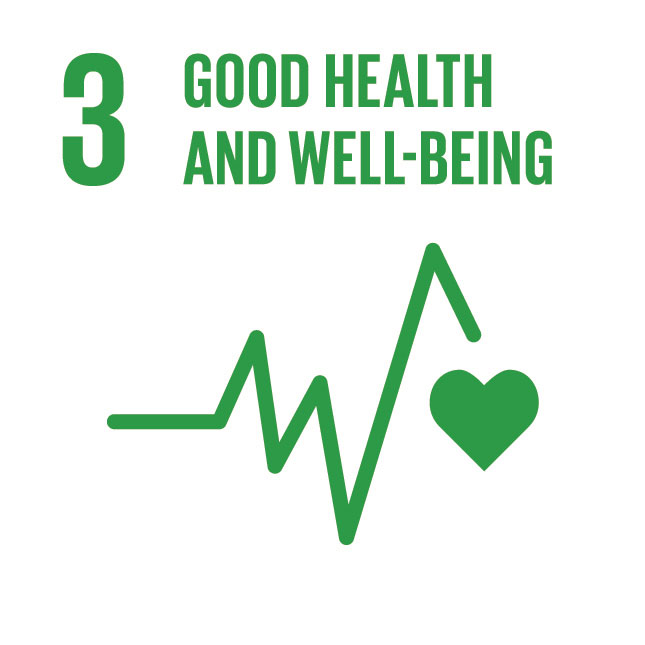

Health and Well-Being for Students in Examination Years
As students approach their examination years, the pressure to perform well can often lead to stress and anxiety. However, maintaining good health and well-being during this crucial time is essential not only for academic success but also for overall personal development. Here are some key strategies to help you navigate this challenging period while prioritizing your health.
- Balanced Nutrition
Proper nutrition fuels both the mind and body. Aim to consume a balanced diet rich in fruits, vegetables, whole grains, and lean proteins. Foods high in omega-3 fatty acids, such as fish and walnuts, can enhance brain function and improve concentration. Remember to stay hydrated; drinking enough water is vital for cognitive performance and energy levels. - Regular Exercise
Physical activity is a powerful stress reliever. Incorporating regular exercise into your routine can help improve mood, boost energy levels, and enhance focus. Whether it's a brisk walk, a yoga session, or team sports, find an activity you enjoy and make it a part of your daily routine. - Effective Study Techniques
Developing effective study habits can reduce anxiety and improve retention. Use techniques such as spaced repetition, active recall, and mind mapping. Break your study sessions into manageable chunks and take regular breaks to avoid burnout. Remember, quality often trumps quantity when it comes to studying. - Mindfulness and Relaxation
Practicing mindfulness and relaxation techniques can significantly reduce stress. Consider incorporating meditation, deep-breathing exercises, or journaling into your daily routine. These practices can help clear your mind, improve focus, and promote a sense of calm. - Adequate Sleep
Sleep is crucial for cognitive function and overall well-being. Aim for 7-9 hours of quality sleep each night, especially during exam preparation. Establish a regular sleep schedule, create a calming bedtime routine, and limit screen time before bed to improve your sleep quality. - Social Support
Don't underestimate the power of social connections. Surround yourself with supportive friends and family who understand the pressures you're facing. Share your feelings and concerns with them, and don't hesitate to seek help if you're feeling overwhelmed. Group study sessions can also provide motivation and camaraderie. - Time Management
Effective time management can alleviate stress and help you feel more in control. Create a study timetable that allocates time for each subject, breaks, and leisure activities. Prioritize tasks and set realistic goals to avoid last-minute cramming. - Seek Professional Help When Needed
If you find that stress or anxiety is becoming unmanageable, don't hesitate to reach out for professional help. School counselors, psychologists, or trusted adults can provide valuable support and resources to help you cope.